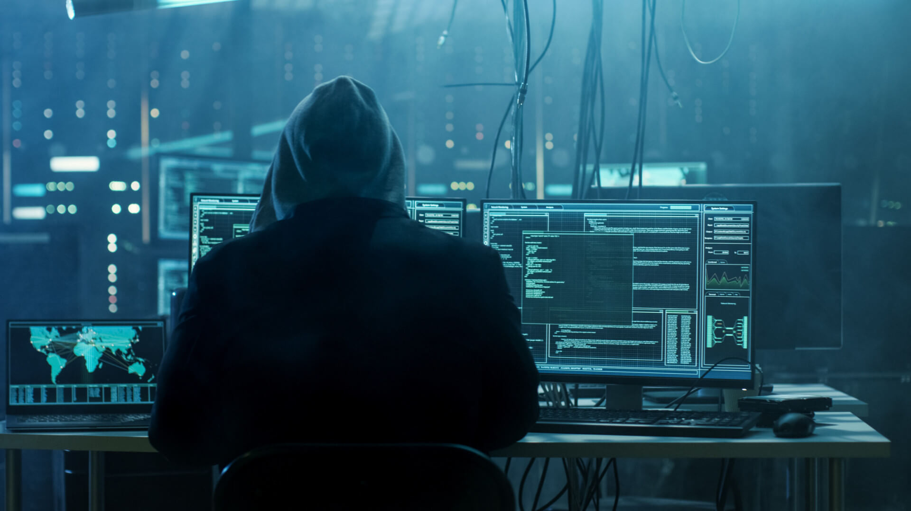
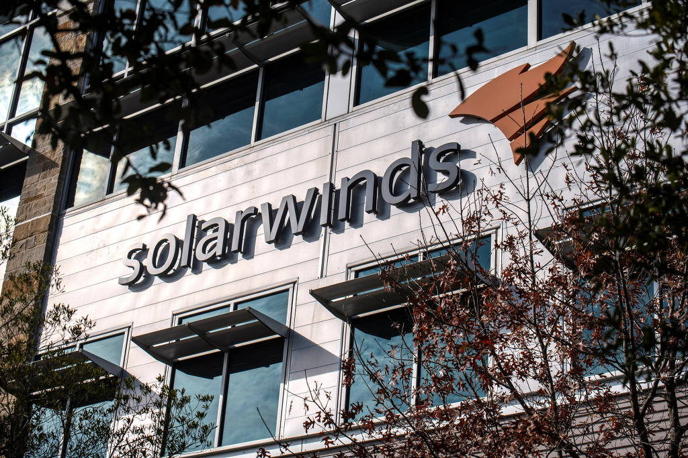

ataques
Hacker
No Instituto de Tecnologia de Massachusetts, entre a década de 50 e 60 surgiu o termo “hacker”, era usado para representar pessoas que faziam truques para solucionar problemas ligados a tecnologia.
Entretanto essa palavra atualmente está fortemente associado a crimes cibernéticos, embora muitos tenham utilizado seu conhecimento para cometer delitos, a palavra significa muito mais do que pensam, hackers são pessoas que possuem grandes conhecimentos e habilidades na área da informática e podem trazer grandes benefícios para empresas, identificando vulnerabilidades em seus sistemas.
Kevin Mitnick foi um dos pioneiros entre os hackers, começou quando ainda era adolescente, entre seus crimes cibernéticos estão:
1981: Ele foi acusado de roubar manuais de computadores da Pacific Bell.
1982: Invadiu o Departamento de Defesa dos EUA (NORAD).
1989: Ganhou notoriedade pois invadiu a rede da Digital Equipment Corporation (maior fabricante de computadores na época) e copiou os softwares da empresa.
Mitnick não se aproveitou do acesso e dos dados obtidos, pois tinha um único objetivo, de provar que era possível hackeá-los, mostrando a vulnerabilidade dos sistemas.
Alguns tipos de Hackers
White Hats: categoria de pesquisadores e operadores que identificam vulnerabilidades para empresas, quando identificadas esses hackers notificam essas ameaças somente para elas. São conhecidos como hackers éticos.
Black Hats: categoria de hackers que tem como objetivo invadir redes de computadores de empresas e implantar Malwares, visando o ganho pessoal/ financeiro.
Gray Hats: categoria que procura falhas na segurança em sistemas da empresa, não agem com más intenções, mas acabam divulgando as falhas publicamente.
Cracker: categoria que possui muito conhecimento em tecnologia, entretanto usa esses conhecimentos para quebra de segurança e de software, se beneficiando financeiramente.
("Imagem: https://generacionxbox.com/wp-content/uploads/2019/03/hacker-generacionxbox.jpg")
Ataques Hackers
Existem diversos tipos de ataques cibernéticos, eles ocorrem a partir de uma brecha no sistema, no momento que o Software envia ou recebe arquivos concede a possibilidade de uma invasão hacker, normalmente fazem esses ataques por meio de arquivos fakes.
Implanta em seu sistema um arquivo que parece ser inofensivo, mas tem o potencial de espionar e roubar dados, existem ataques que sobrecarregam o servidor, ocasionando em sua extrema lentidão, dificultando a navegação, esses ataques podem afetar apenas um indivíduo ou causar danos em escala global.
Ataque Cyber-Ativista
O grupo de Hackers identificados como Anonymous, teve sua notória reaparição após o assassinato de George Floyd um afro-americano que foi assassinado injustamente por um policial.
“O assassinato de Floyd, de 46 anos, emocionou o mundo e causou uma onda de manifestações antirracistas em cidades norte-americanas. O policial responsável pelo assassinato foi demitido da corporação.” (Materia:https://catracalivre.com.br/cidadania/anonymous-ameaca-autoridades-dos-eua-apos-morte-de-george-floyd/)
O vídeo repercutiu após mostrar o policial Derek Chauvin abordar Floyd por supostamente usar uma nota falsa de U$ 20 dólares em um supermercado, o policial ajoelhou em seu pescoço em torno de 8 minutos, mesmo após Floyd repetir centenas de vezes que estava sem ar.
Após a repercussão do vídeo, os anonymous hackearam os meios de comunicação da polícia na cidade de Minneapolis, interceptando os rádios que comunicavam as manifestações, colocando a música “fuck the police”
Também, expuseram as autoridades dos EUA divulgando e-mails coorporativos e senhas, além de expor e o ex-presidente Donald Trump, divulgando supostas ações judiciais acusando-o de estupro, abuso sexual, etc.
(Link video: https://www.youtube.com/watch?v=_fsmfTwyrmE)
Ataque coorporativo
Uma ação audaciosa sobre um vírus em aplicativos da empresa de software SolarWinds permitiu que pudessem invadir seu sistema de segurança, assim podendo prejudicar os órgãos do governo americano e tais empresas como a Microsoft. Com tanto eles conseguiram ter acesso a dados e informações secretas de um longo período, e sendo assim revelando o fracasso da cooperação internacional para lidar com o contágio do Covid-19.
No fim de 2019 dando início a 2020, podemos dizer que hackers inseriram um malware (vírus criado para roubar e danificar todo tipo de informação) fornecidos pela SolarWinds, uma infraestrutura de TI com uma sede no texas.
Em dezembro o vírus não foi só exposto como também foi apelidado de Sunburst pela segurança cibernética FireEye e por tal Solarigate da Microsoft, por muitos meses os invasores tiveram poder para se infiltrarem nas organizações governamentais e privadas de atualização de um software com gerenciamento de segurança cibernética Orion.
Com o Sunburts e outro malware descoberto recentemente a conectividade global fica danificada e com tudo isso a cooperação internacional para lidar com esse tipo de contágio revelam o lado negativo. Podemos dizer que a SolarWinds tem mais de 300 mil clientes em todo o mundo, em 2020 foram enviadas atualizações de software para 18 mil deles, no momento são 250 redes que podem ter sido atingidas e afetadas.
O departamento de justiça dos EUA denunciou 12 russos que podem estar envolvido no caso de 2018, para empresas privadas os EUA advertiu que qualquer ataque representa risco grave para o governo federal.
Apresentamos nesta matéria alguns ataques que vem acontecendo, os tipos de ataques, o que motiva os hackers fazerem isso e um pouco de sua história. Vemos que todos nós estamos correndo perigo dentro de um sistema, por isso criamos uma matéria sobre como podemos nos proteger contra ataques. Clique aqui para cibersegurança